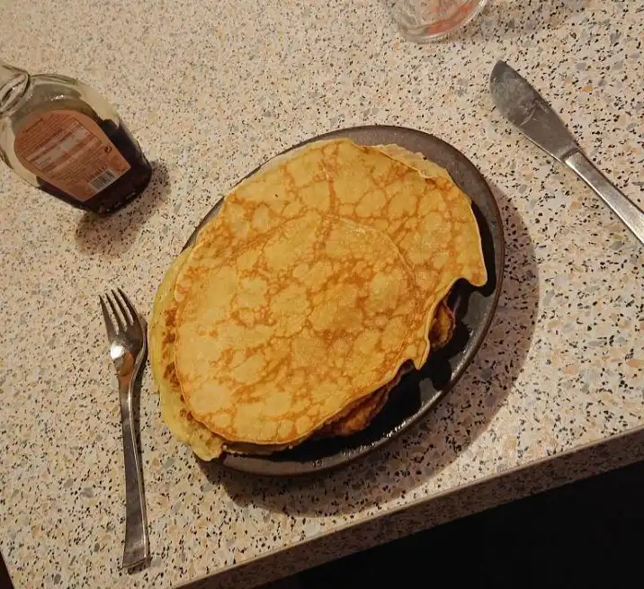

Glutenfree Pfannkuchen (pancakes)

A very easy recipe for glutenfree Pfannkuchen (german pancakes).
- ⏲️ Prep time: 20 min
- 🍳 Cook time: 10 min
- 🍽️ Servings: 1
Ingredients
- 100g glutenfree flour
- 200ml milk
- 50g sugar
- 2 eggs
- a pinch of salt
Directions
- Mix all ingredients in a bowl
- Let the dough rest for ~15 mins
- Heat a pan with a bit butter
- For each pancake spread a ladle of dough in the pan and bake them at lower medium temperature until they are brown on both sides
Served with
- Syrup
- Cinnamon and sugar
Contribution
- Lxgr - github